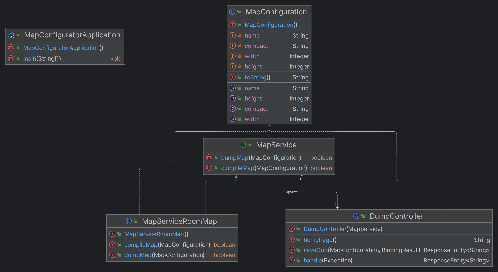

Introduction
Documento che tratta la realizzazione del MapConfigurator, in relazione all'analisi presente nello Sprint1.
Requirements
L'applicativo MapConfigurator deve permettere di:
- generare una rappresentazione della ServiceArea comprensibile alla macchina
- configurare i vari landmarks
- interagire in maniera semplice ed intuitiva
Requirement analysis
Requisito 1: generare una rappresentazione della ServiceArea comprensibile alla macchina.
Con "comprensibile alla macchina", intendiamo la rappresentazione in forma testuale e binaria che è in grado di comprendere il software basicRobot. In particolare, quest'ultimo utilizza la classe unibo.planner23.model.RoomMap, che fa uso di questa rappresentazione. Di seguito, è riportato un esempio della versione testuale.
|1, 1, 1, 1, 1, 1, 1,
|1, 0, 0, 0, X, X, 1,
|1, 0, 0, 0, X, X, 1,
|1, 0, 0, 0, 0, 0, 1,
|1, 1, 1, 1, 1, 1, 1,
La forma binaria corrisponde ad un dump binario di un'istanza della classe RoomMap.
Requisito 2: configurare i vari landmarks.
Oltre alla generazione della mappa dell'area di servizio, l'utente dovrà avere la possibilità di inserire i quattro tipi di landmarks:- PORT
- INDOOR
- HOME
- COLDROOM
La rappresentazione dei landmarks dovrà anch'essa essere comprensibile alla macchina: questo aspetto è stato analizzato nella sezione coordinate del progetto principale.
Requisito 3: interagire in maniera semplice ed intuitiva
Quest'applicativo deve risultare di semplice utilizzo da parte dell'utente: è infatti pensato per un eventuale cliente (personale NON tecnico) che debba realizzare una configurazione precisa per l'area di servizio.
Problem analysis
Pensiamo al MapConfigurator come ad una applicazione grafica web.
Al fine di garantire semplicità di utilizzo, abbiamo pensato di rappresentare la service area come una matrice di blocchi trascinabili. Si avrà quindi come base una matrice di blocchi M x N, ognuno deqi quali potrà avere associato uno tra i landmarks sopra definiti.
Project
MapConfigurator
Come per la ServiceAccessGUISim utilizziamo il framework Spring Boot.
Le feature principali dell'applicazione includono:
- blocchi trascinabili: la griglia viene compilata trascinando i blocchi che rappresentano i landmark con una funzionalità di drag and drop;
- griglia ridimensionabile: è possibile ridimensionare la griglia tramite gli slider in alto, la dimensione di default è quella individuata utilizzando
unibo.mapperQak23 - persistenza: l'utente troverà la configurazione creata salvata tra sessioni, permettendo di riprendere la modifica dove era stata lasciata
- utilizzo intuitivo: l'applicazione deve essere semplice da utilizzare nascondendo i dettagli della rappresentazione utilizzata dal planner
I blocchi trascinati sulla mappa vengono considerati come esplorati e, nel caso del blocco della ColdRoom marcati come ostacoli nella rappresentazione sotto forma di unibo.planner23.model.RoomMap.
Questa applicazione è completa nel rispetto delle funzionalità di base che abbiamo considerato necessarie; è possibile, tuttavia, che in futuro venga estesa con feature di utilità aggiuntive.
Diagramma delle classi
Infine, si riporta il diagramma UML delle classi dell'applicazione.
